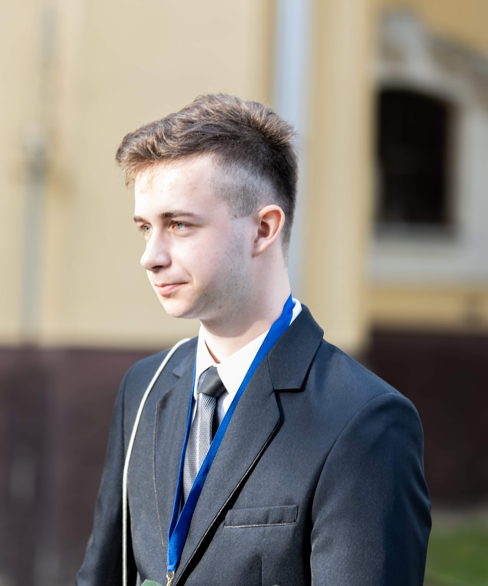
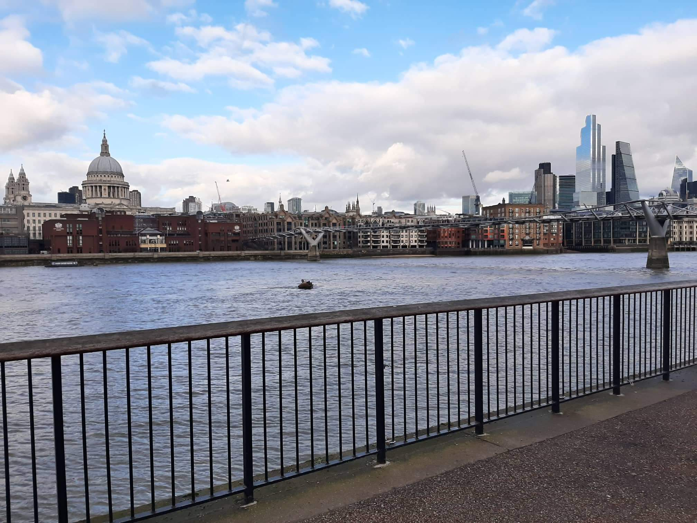
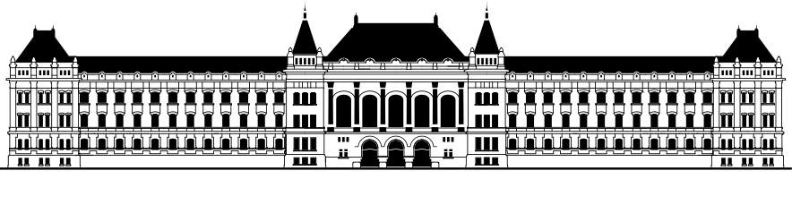

Menü
Főoldal
Elérhetőségek
Telefonszám: 062675753
E-mail: sajtoskenyér@gmail.com
Budapest 1111,
XI. Kerület
Irinyi József u 1-17.
Kármán Tódor Kollégium 559
E-mail: sajtoskenyér@gmail.com
Budapest 1111,
XI. Kerület
Irinyi József u 1-17.
Kármán Tódor Kollégium 559
Grafikai tervezet
Tanulmányok
2000 december 25.-én születtem, és azóta is Hajdúnánáson lakok a családommal együtt. A helyi gimnáziumba jártam, ahol matematika specializiót vettem fel, majd fizika fakultációra jártam. Párszor vettem részt tanulmányi versenyeken, többek közt egy regionális első helyezett díjat is nyertem. Emellett nagyon érdekelt a történelem is. Sokat olvasgattam hasonló témájú könvyeket és cikkeket is az interneten. Nem zárkózóm el semmilyen tudomány, vagy épp művészeti ágtól sem. 8. éve vagyok tagja a helyi néptánc egyesületnek. Azonban a műszaki pálya az ami a legjobban vonz, és ahol el tudom képzelni magam a jövőben.
Sokáig bizonytalan voltam pontosan milyen mérnöki képzésre jelentkezzek. 10. évfolyamban készítettem egy projekt bemutatót a fúziós energiatermeléssel kapcsolatban. Az ahhoz fűződő információ szerzés során felettébb megtetszett ez a téma. Érdeklődésem azóta sem lankadt, sőt. Folyamatosan nyomon követem a legújabb híreket az ITER-el vagy Wendelstein 7X-el kapcsolatban, melyek forradalmi megoldások is lehetnek a tiszta, és olcsó energiatermelés szempontjából. Számomra ezek fontos, és izgalmas kérdések. Komoly kihívásokat állítottam magam elé, amikor elhatároztam, hogy valamilyen formában részt szeretnék venni ezekben a kutatásokban, fejlesztésekben.
Érettségi bizonyítványom megszerzése után azonban nem felvételiztem felső oktatásba.

Az Egyesült Királyságba utaztam, hogy egy évet kihagyva dolgozhassak különböző területeken, és hogy próbára tegyem nyelvtudásom. Worcesterben gyári munkásként, majd Londonban pincérként találtam megélhetést. Számos élménnyel gazdagodtam, és újult erővel térhettem haza, hogy folytathassam tanulmányaimat Magyarországon.
2020 szeptemberében iratkoztam be a Budapesti Műszaki Egyetem Energetikai Mérnök alapképzésére. Nagyon izgalmasnak találom a itteni életet. Azt gondolom egy kis lépéssel közelebb kerültem a jövőben megvalósítandó álmaimhoz.
